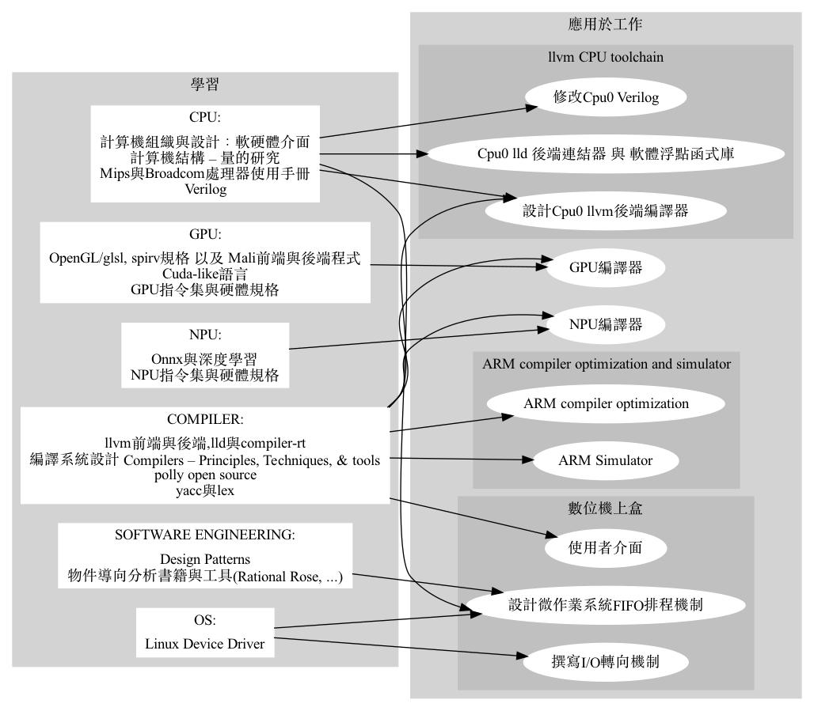

資格
二十年c/c++軟體開發經驗，九年編譯器相關工具開發經驗，碩士時研究平行處理。

陳鍾樞
我是位有經驗的compiler開發者，開發過llvm cpu and gpu backend, lld linker, npu/onnx, c++, OpenGl/glsl compiler與simulator，...， 對寫compiler感到快樂。
二十年c/c++軟體開發經驗，九年編譯器相關工具開發經驗，碩士時研究平行處理。
很高興我的作品已被LLVM接受，出現在 http://llvm.org/docs/tutorial/#external-tutorials
如何建立LLVM後端編譯器  http://jonathan2251.github.io/lbd/index.html
http://jonathan2251.github.io/lbd/index.html
如何建立LLVM後端系統工具  http://jonathan2251.github.io/lbt/index.html
http://jonathan2251.github.io/lbt/index.html
1997-1999 碩士班，六月 1999，國立台灣師範大學，台北，主修：資訊科學。
1991-1994 學士班，六月 1994，國立台灣科技大學，台北，主修：工業工程。
1995年 高考資訊技師及格。
修影像處理課程與撰寫:Jpeg decoder程式
Graphivz: 如此詳細履歷裡的一些圖學的圖。原始碼： mywork_1.gv and study_and_apply_ch1.gv
Gpu tensor指令與usharpid處理。
Gpu編譯器最佳化與bug fix。
我們的Cude-like語言async{...}平行處理解法白皮書。
改寫我們的NPU編譯器上兩層的IR中間碼轉換程式以提供共同的hardware independent圖形資料結構, 以利多種NPU的支持。
支持加密格式的ONNX與config檔輸入。
確認如何支持MLIR。
GPU編譯器範圍:

為支援自行設計的手機GPU, 移植ARM的code。20%前端需修改, 50%後端需修改(以行數計算)。
我的工作:
獨立完成80% texture相關的API與optimization (frontend + llvm backend)與document撰寫。
指導別的工程師完成其餘20% texture相關的API, 80 APIs totally here , 核對並與texture的架構leader一起合作。
完成Prefetch-Sample optiomization, 讓driver在載入glsl bin與執行sampling指令前就可驅動2D sampling指令。
獨立完成GPU對vulkan load/store RGBA 固定浮點格式(32, 16, 11, 10 and 2 bits; NaN Infinity)支援的指令生成與document撰寫。
設計半自動的軟體系統，自動執行用gcc編譯器編譯benchmark程式，並產生excel比較圖表。
為提升Marvell公司gcc與llvm編譯器軟體工具效能，介紹Polly軟體系統。Polly是針對loop最佳化的開放原始碼專案。

提出與實作DSL領域語言解決方案應用在ARM 64位元Csim上。
用cmake替代make於Csim上。
優點: 比make簡潔與跨平台。
下半部是llvm的流程圖。黃色與綠色分別是我書中（如上，我的開法原始碼專案）。

開發數位機上盒
